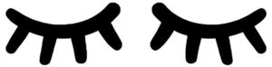

Trade Mark Journal No.2025/019 9 May 2025
WO0000001833850 (18,24,25,26,35)
Office of origin: United States of America
Date of International Registration:25 July 2024
Date of designation in the UK:
25 July 2024

The mark consists of a right and left pair of eyelashes.
International priority date claimed: 13 March 2024
(United States of America)
(98446767)
- Class 18
- Pet clothing, namely, pet bandanas.
- Class 24
- Bamboo fabric; viscose fabric; children's blankets; baby blankets; swaddling blankets; blanket throws; fitted crib sheets; bed sheets; sheet sets; pillowcases; swaddling clothes.
- Class 25
- Sleepwear; pajamas; infant wearable blankets; infant gowns; jogging pants; hoodies; tutus; rompers; hats; headbands; beanies; shirts; t-shirts; dresses; pants; sweaters; cardigans; shorts; skorts; sweatshirts; bodysuits; baby bodysuits; sweatpants; leggings; skirts; jumpsuits; overalls; underwear; clothing jackets.
- Class 26
- Hair accessories, namely, hair scrunchies and hair ties.
- Class 35
- Online retail store services in relation to sleepwear, pajamas, swaddling clothes, infant wearable blankets, infant gowns, jogging pants, hoodies, tutus, rompers, hats, headbands, beanies, sleep masks, shirts, t-shirts, dresses, pants, sweaters, cardigans, shorts, skorts, sweatshirts, bodysuits, baby bodysuits, sweatpants, leggings, skirts, jumpsuits, overalls, underwear, and clothing jackets; online retail store services in relation to pet clothing, namely, pet bandanas; online retail store services in relation to children's blankets, baby blankets, swaddling blankets, blanket throws, fitted crib sheets, bed sheets, sheet sets, and pillowcases; online retail store services in relation to hair accessories, namely, hair scrunchies and hair ties.
Little Sleepies, LLC
Representative: Haseltine Lake Kempner LLP, One Portwall Square, Portwall Lane Bristol BS1 6BH UNITED KINGDOM